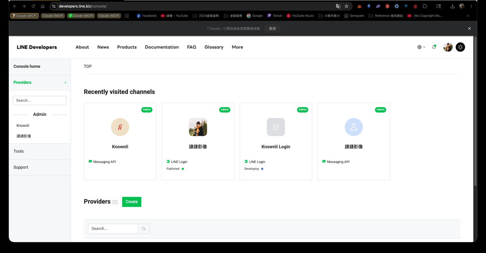
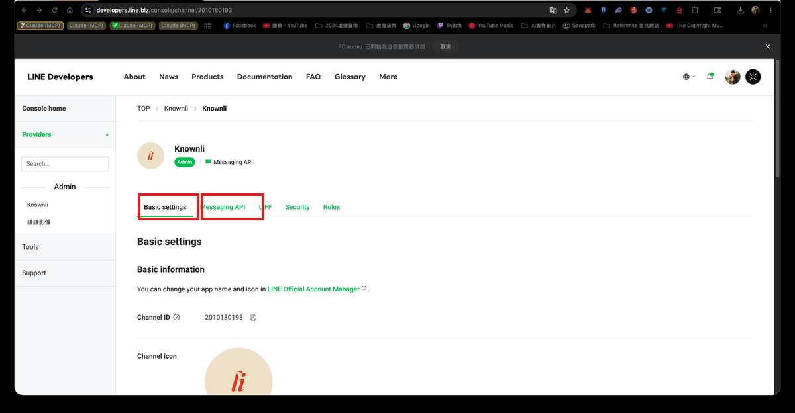
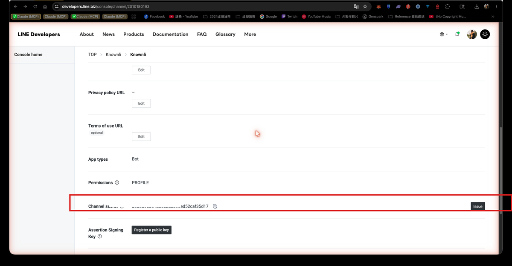
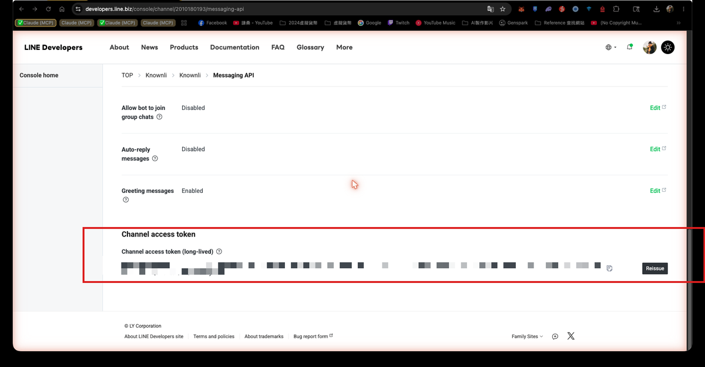
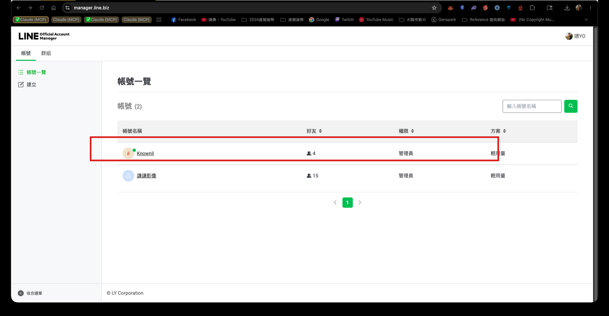
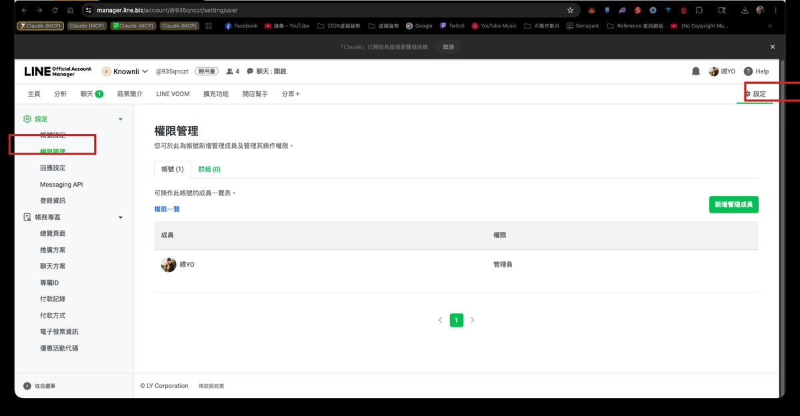
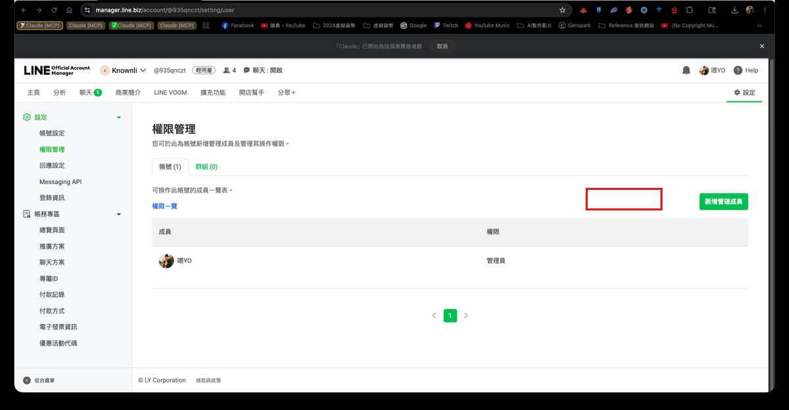
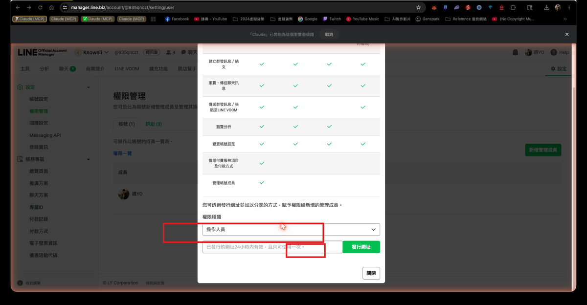

你需要到兩個不同的 LINE 後台各找一個資料，加起來大約 10 分鐘。
找到後直接用 LINE 傳給我就好。
打開瀏覽器前往 developers.line.biz/console， 用 LINE 帳號登入後就會看到這個畫面。

點選帶有 Messaging API 標籤的那個 Channel，進去後會看到下方的分頁列。

停在 Basic settings 分頁，往下捲動，找到 Channel secret 那一行，把右側的值複製起來。

點上方的 Messaging API 分頁，一路往下捲到底，找到
Channel access token (long-lived) 區塊。
如果框框是空的，點 Issue 按鈕產生一組；已有內容就直接複製。

要傳的：① Channel secret ② Channel access token
前往 manager.line.biz， 登入後可以看到你管理的帳號列表。點選你的帳號進去。

最快的方法：用你自己的手機 LINE，傳一則訊息給這個 LINE OA 帳號。
傳完後，我從後台 Webhook 記錄裡撈出你的 User ID（你不需要做任何設定）。
② Channel access token（從 LINE Developers → Messaging API）
③ 傳一則訊息給你的 LINE OA（讓我抓你的 User ID）
你只需要在兩個後台各做一次邀請，之後我自己進去完成所有設定，
你完全不需要找任何技術資料。
進入帳號後，點右上角的 設定，再從左側選單選 權限管理。

在「權限管理」頁面，點右側的 新增管理成員 綠色按鈕。

跳出視窗後：
① 把「權限種類」下拉選單改成 管理員
② 點 發行網址 產生邀請連結
③ 把連結用 LINE 傳給我

前往 developers.line.biz/console → 左側選單點你的 Provider 名稱 → 右上 Settings → Members 頁籤 → 邀請以下 email：
② 在 LINE Developers Console 的 Provider Members 邀請 jacky8495@gmail.com（Admin）
做完之後，剩下的設定我來搞定 💪
有任何問題？
LINE 直接找我：@jacky8495，或 Email：jacky8495@gmail.com